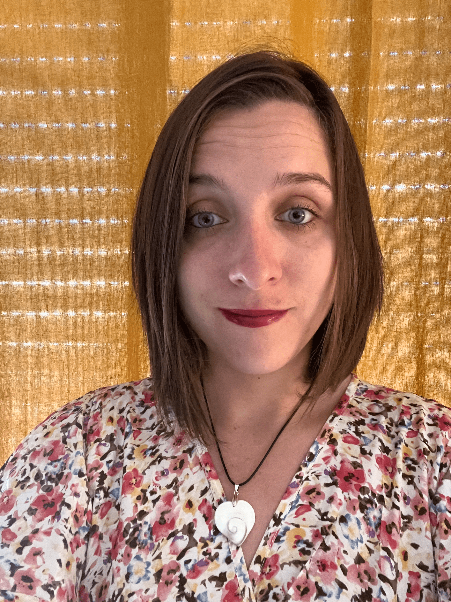

Mail : amandine.boucart@enpc.fr
Adresse : École des Ponts ParisTech
6 et 8 avenue Blaise Pascal
Cité Descartes – Champs sur Marne
77455 Marne la Vallée Cedex 2
Bâtiment Coriolis B309
Présentation : "Modeling scattering from a random thin coating : asymptotic model and numerical simulations".
Juin 2022 : Journées d'études électromagnétisme et guerre électronique, Toulouse, France
Présentation : "Modélisation de la diffraction d'une couche mince de nanoparticules réparties aléatoirement".
Juin 2022 : Congrès national d'Analyse Numérique (CANUM), Evian-Les-Bains, France
Présentation : "Modélisation de la diffraction d'une couche mince de particules distribuées aléatoirement : modèle asymptotique et simulations numériques".
Mai 2022 : Journée des doctorants du CEA-CEST, Arcachon, France
Présentation : "Diffraction par une couche mince de particules : modèle asymptotique et simulations numériques".
Octobre 2021 : Congrès des Jeunes Chercheurs en Mathématiques Appliquées (CJC-MA), Palaiseau
Poster : "Modélisation de la diffraction par une couche mince de nanoparticules disposées aléatoirement".
Juin 2021 : 10ème Biennale Française des Mathématiques Appliquées et Industrielles (SMAI), France
PRÉSENTATION : "Modélisation multi-échelle de la diffraction par une couche mince de nanoparticules disposées aléatoirement".
Mars 2021 : Webinaire du GT1 du GDR Ondes
Présentation : "Modélisation de la diffraction par une couche mince de nanoparticules réparties aléatoirement".
Octobre 2019- Mars 2023 : Thèse de mathématiques appliquées au sein du CEA-CESTA (Le Barp) et de
l'équipe POEMS (UMA-ENSTA PARIS-IPP) sous la direction de Sonia Fliss, Laure Giovangigli et Bruno Stupfel.
Titre : "Diffraction électromagnétique par une couche mince de nanoparticules réparties aléatoirement :
développement asymptotique, conditions effectives et simulations".
Mots-Clés : équations de Maxwell, Développements asymptotiques, homogénéisation stochastique, conditions effectives.
Avril 2019 - September 2019 : Stage de fin d'études au CEA-CESTA (Le Barp) encadrée par Bruno Stupfel.
Sujet : "Conditions d'impédance pour Maxwell : couche mince inhomogène"
Janvier 2018 - Mai 2018 : Mémoire/Stage de fin d'études à l'université de Tours dirigé par Guy Barles.
Sujet : "Etude mathématique et numérique d'une équation de transport avec condition aux bords".
Janvier 2016 - Août 2016 : Apprenti professeur au lycée Voltaire à Orléans, Loiret.
2019 - 2023 : Doctorat en mathématiques appliqués, Ecole Doctorale Mathématiques, Institut Polythechnique de Paris, ENSTA Paris
2018 - 2019 : Master 2 Modélisation, Analyse Numérique et Calcul Scientifique, Université de Nantes
2016 - 2018 : Master de Mathématiques Approfondies, Université de Tours